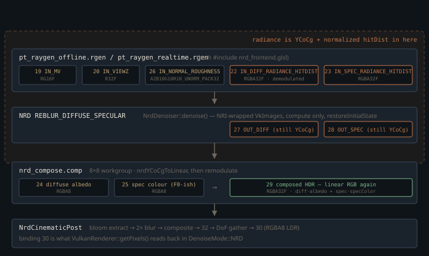

Monograph · Tree · ← Module hub · NRD REBLUR + compose
denoise
NRD REBLUR + compose
Pack YCoCg, dispatch, unpack compose, cinematic post.
Three encodings REBLUR insists on
NVIDIA's REBLUR is a spatio-temporal accumulator that reads meaning out of the bits you hand it, and it refuses almost everything a path tracer naturally produces. Its diffuse and specular inputs must be *demodulated* (surface colour divided out), carried in *YCoCg* rather than linear RGB, and their alpha channel must hold a hit distance already *normalized* into [0,1] by NRD's own view-depth-and-roughness formula. Get either of the first two wrong and the failure is not subtle noise — it is a hue shift; get the third wrong and REBLUR quietly filters at the wrong radius.
Only one of the three round-trips inside a single file. The 43-line `nrd_frontend.glsl`, included by two raygens and the compose pass, holds both directions of the YCoCg rotation, but only the forward direction of the hit-distance map — and neither half of the demodulation, whose divide is in the raygen and whose matching multiply is in `nrd_compose.comp`.

Demodulation, and why only the diffuse gets divided
Temporal filters smooth *lighting*, and lighting is smooth; albedo is not. Radiance that still carries texture detail makes the filter fight the texture, so the diffuse channel is divided by first-hit albedo before packing, with a floor to survive metals, where diffuse albedo is zero:
vec3 diffDemod = diffContrib / max(firstHitDiffAlbedo, vec3(0.03));shaders/rt/pt_raygen_offline.rgen:1346The specular channel is *not* divided by anything — which looks like an omission until you find the other half. The indirect specular ray carries a throughput that is white for dielectrics and base-colour for metals, and the AOV compose multiplies back is built to be its complement:
specThroughput = mix(vec3(1.0), albedo, metallic);shaders/rt/pt_raygen_offline.rgen:597firstHitSpecColor = mix(F0, vec3(1.0), metallic);shaders/rt/pt_raygen_offline.rgen:295Writing $\mathbf{a}$ for base colour and $m$ for metallic, the two lerps multiply to a single application of the Fresnel colour at both endpoints of the slider:
and because a metal's $F_0$ *is* its base colour, both branches equal $F_0$.
Where the lerp pair stops being exact
That identity holds for the indirect chain, which is the only thing `specThroughput` scales. It does not hold for the bounce-0 direct lobe. The analytic NEE and env-MIS terms at the primary hit run with throughput 1 and fold a full Schlick $F$ into the BRDF before adding to `specContrib`:
vec3 neeSpecular = neeCommon * spec * NdotL;shaders/rt/pt_raygen_offline.rgen:492For metals that is still one application: $F\approx F_0=\mathbf{a}$ inside the ray, $\times 1$ in compose. For dielectrics it is two — the radiance already carries $F$, and compose multiplies by $F_0\approx 0.04$ a second time. Primary dielectric highlights are therefore darker in the NRD composite than in the beauty buffer, which applies the same `spec` term exactly once. The realtime raygen widens the gap: its live VNDF branch sets `specThroughput` to true Fresnel rather than $\mathrm{lerp}(1,\mathbf{a},m)$, so its *indirect* dielectric specular is double-counted as well.
specThroughput = F * smithG2overG1GGX(NdotV, NdotL, alpha);shaders/rt/pt_raygen_realtime.rgen:792The comment sitting on the specColor line records what the lerp is defending against:
// compose must NOT re-apply it — doing so double-darkened metals to near-black.shaders/rt/pt_raygen_offline.rgen:292The lerp pair was written to fix metals, not dielectrics. The rejected alternative is the obvious one — `specColor = F0`, no lerp to white — and because a metal's $F_0$ is its base colour, that multiplied base colour into radiance that already carried it, driving metals to near-black. Lerping the AOV to white at $m=1$ removes the second application and costs no extra AOV; the dielectric bounce-0 case above is the part of the bill still outstanding.
YCoCg, and the two ways to get magenta
The forward transform is the standard reversible luma/chroma rotation ported from `NRD.hlsli`, where $Y$ is luma and $C_o,C_g$ are the orange and green chroma axes:
The inverse is done without a matrix: $t=Y-C_g$ recovers $(R+B)/2$, so $G=Y+C_g$, $R=t+C_o$, $B=t-C_o$. Algebraically exact — but the unpack still clamps, because a spatio-temporal filter reconstructs a value that was never in the original gamut and can land slightly negative:
return max(r, vec3(0.0));shaders/includes/rt/nrd_frontend.glsl:24Two distinct mistakes produce the same magenta symptom, and the code carries a comment for each. Skip the pack, and REBLUR reads red as luma and green/blue as chroma; compose then rotates an already-linear triple through the inverse basis:
// Without this, REBLUR treats RGB as YCoCg and compose remodulates garbage → magenta.shaders/rt/pt_raygen_offline.rgen:1348Pack correctly but skip demodulation, and the input is in the right basis but the wrong space — the filter's cross-channel behaviour drifts on albedo-coloured radiance, and compose applies surface colour a second time. The recorded symptom there was a blue-to-magenta shift *plus* a visible darkening.
Magenta in the NRD path is almost never a denoiser bug. It means a producer and a consumer disagree about which colour space binding 22/23 is in. Check the pack before you touch anything in NRD.
The hit distance is a control signal, not data
REBLUR uses alpha to decide how hard to filter each pixel, so the world-space ray length has to be mapped into [0,1] against a scene-scale reference. With $d$ the ray length, $z$ the first hit's view-space depth and $s\in[0,1]$ a lobe-spread term:
Nothing reads $z$ back from binding 20. The raygen computes it at the primary hit, keeps it in a local, and writes it to that binding for NRD's separate `IN_VIEWZ` slot; the normalization uses the local:
firstHitViewZ = -viewPos.z;shaders/rt/pt_raygen_offline.rgen:233The constants are NRD's `ReblurHitDistanceParameters` defaults, hardcoded in GLSL:
const vec3 NRD_HIT_DIST_PARAMS = vec3(3.0, 0.1, 20.0);shaders/includes/rt/nrd_frontend.glsl:9$s$ is where OHAO knowingly diverges. NRD derives it from a richer function of roughness; the shader substitutes $\text{roughness}^2$ and says so:
float smc = roughness * roughness; // lobe-spread proxy (NRD uses a richer F)shaders/includes/rt/nrd_frontend.glsl:29Diffuse and specular also *measure* $d$ differently. Diffuse records only the first secondary hit — one segment, the local occluder. Specular sums the whole chain while it stays specular, so a mirror reports the distance to the virtual image rather than to the mirror:
specHitDist += payload.hitDist;shaders/rt/pt_raygen_offline.rgen:623The sharp edge is that $A$ exists twice. The shader hardcodes it at 3.0; the C++ profile re-declares it and pushes it into `ReblurSettings` — while $B$ and $C$ are left at NRD's defaults and have no C++ knob at all:
s.hitDistanceParameters.A = p.hitDistanceParamA;ohao/render/rt/denoise/nrd_denoise.cpp:227Change `hitDistanceParamA` and the two halves normalize against different scales, with no build-time check that they agree.
Which raygen actually speaks NRD
Three raygen shaders write bindings 22/23; only two of them include the front-end. `pt_raygen.rgen` still writes the pre-NRD layout — linear RGB with a raw, unnormalized distance in alpha:
AOV_ACCUMULATE_WRITE(diffuseRadiance, pixel, vec4(diffContrib, diffHitDist));shaders/rt/pt_raygen.rgen:1267That is the *default* member of `PathTracerShaderSet`, and it is exactly the magenta configuration. Nothing shipped reaches it — `VulkanRenderer` constructs only the realtime and offline profile renderers, each passing an explicit shader set naming its own raygen — but anyone reusing `PathTracer` directly will.
"bin/shaders/rt_pt_raygen_offline.rgen.spv",ohao/render/rt/rt_profile_renderer.hpp:220A second gate matters before profiling: the REBLUR dispatch is not conditioned on the active denoise mode, only on the denoiser existing and auxiliary AOVs being on, which both shipped profiles enable unconditionally:
if (m_nrdDenoiser && m_renderSettings.enableAuxiliaryAOVs) {ohao/render/rt/path_tracer_render.cpp:869So REBLUR, compose and the cinematic chain execute on every RT frame even under `--denoise=oidn` or `none`; only `getPixels()` in `DenoiseMode::NRD` reads the result back.
Lending NRD a device it did not create
NRD's Vulkan path goes through NRI, which normally creates its own device. Here it is handed OHAO's, described by a `DeviceCreationVKDesc` carrying the extension lists the app passed to `vkCreateInstance` and `vkCreateDevice`. The instance list is copied verbatim:
m_impl->instanceExtensionsStorage.assign(instanceExtensions.begin(), instanceExtensions.end());ohao/render/rt/denoise/nrd_denoise.cpp:87The device list loses three. NRI's dispatch-table resolver eagerly looks up `vkCmdTraceRaysIndirect2KHR` whenever it sees `VK_KHR_ray_tracing_pipeline`, and that entry point lives in `VK_KHR_ray_tracing_maintenance1`, which OHAO does not enable. REBLUR is compute-only, so acceleration-structure, RT-pipeline and deferred-host-operations names are filtered out of the NRI-facing copy:
std::strcmp(e, VK_KHR_RAY_TRACING_PIPELINE_EXTENSION_NAME) == 0 ||ohao/render/rt/denoise/nrd_denoise.cpp:84Resources cross as raw `VkImage` plus `VkFormat`, not image views — NRI builds its own views from the format. All seven slots are declared as already being in `SHADER_RESOURCE_STORAGE` (`VK_IMAGE_LAYOUT_GENERAL`). For the five inputs that is where the raygen leaves them. The two `OUT_` images are written by no shader before this point; the host puts them in `GENERAL` with an explicit `UNDEFINED`→`GENERAL` barrier recorded ahead of the trace, in the same block that transitions the AOVs:
aovBarriers[10].image = m_outDiffRadianceImage;ohao/render/rt/path_tracer_render.cpp:608The snapshot then asks for the layouts to be restored afterwards so compose and the host readbacks find what they expect:
snapshot.restoreInitialState = true;ohao/render/rt/denoise/nrd_denoise.cpp:293Compose is deliberately trivial
`NrdCompositor` owns a standalone compute pipeline whose descriptor set layout is independent of the path tracer's RT layout: five storage images, no push constants, an 8×8 workgroup. The whole shader is an unpack and a remodulate:
vec3 composed = diffRad * diffAlbedo + specRad * specColor;shaders/rt/nrd_compose.comp:32Alpha is dropped here. NRD's own input contract defines the normalized hit distance as ambient occlusion on the diffuse channel and specular occlusion on the specular one, and says the `.w` of REBLUR's output carries the filtered version — a signal an application can spend on second-bounce diffuse or on damping IBL. OHAO spends it on nothing: compose reads `.rgb` and discards `.w`, so here it really is only a control signal for REBLUR's own filter widths.
Tuning for a path tracer instead of a game
REBLUR ships with a 30-frame linear accumulation window. OHAO feeds it AOVs that are already averaged over N samples, so the profile pushes the window to REBLUR's documented ceiling of 63 instead — the code states both numbers where it makes the change:
// Maximum linearly accumulated frames. NRD default 30; we bump to 63ohao/render/rt/denoise/nrd_denoise.hpp:119The "multi-sample" part is a running mean written by the raygen itself: in NRD mode each of the five AOV bindings is blended with its previous value at weight $1/(n{+}1)$, so after $N$ samples the image is intended to hold their mean rather than the last sample.
_ohaoAovCur = mix(_ohaoAovPrev, _ohaoAovCur, 1.0 / _ohaoAovN); \shaders/rt/pt_raygen_offline.rgen:74That is an `imageLoad` of the previous dispatch's contents, and the mean is only as good as those contents. Every `render()` re-records the AOV transition block with `oldLayout = VK_IMAGE_LAYOUT_UNDEFINED`, which the spec explicitly permits an implementation to treat as a discard — the running average is a property the code relies on rather than one Vulkan guarantees:
aovBarriers[5].oldLayout = VK_IMAGE_LAYOUT_UNDEFINED;ohao/render/rt/path_tracer_render.cpp:561The other half of the temporal story is throwing history away. On any frame where the view changed, the host reports frame index 0 *and* overwrites the previous view/projection matrices with the current ones, so NRD cannot reproject from a stale pose and trail a ghost behind a moving camera:
camera.frameIndex = m_viewChangedThisFrame ? 0u : m_historyFrameCount; // 4.F T2: bootstrap on view changeohao/render/rt/path_tracer_render.cpp:896That bootstrap costs one spatial-only frame per camera move — the trade the code takes over smeared geometry.
The cinematic tail
`NrdCinematicPost` consumes the composed HDR at binding 29 and runs bloom extract, two downsample-blur passes, a tonemap composite, then a depth-of-field gather. Two things in here read as one thing and are another. First, the tonemap: `cinematic_composite.comp` still carries a complete AgX implementation — inset and outset matrices, the 6th-order contrast fit — but `main()` calls none of it and applies Khronos PBR Neutral instead:
// 4. Tonemap — Khronos PBR Neutral (the asset-visualization industryshaders/rt/cinematic_composite.comp:168Second, a naming hazard that survives an earlier revision: the input struct's `tonemappedOut` field no longer carries the final image. Since DoF was added the composite writes the *pre*-DoF image at binding 32, and only the gather writes binding 30 — which is what the host reads back.
/// NOTE: `tonemappedOut` in `inputs` is wired to the pre-DoF LDR imageohao/render/rt/denoise/nrd_cinematic.hpp:127Contracts
- Bindings 22/23 are YCoCg + normalized hit distance, and 27/28 come back the same way. A consumer that reads them as linear RGB — a debug visualizer, say — shows scrambled hue, not an obvious error.
- `NRD_HIT_DIST_PARAMS.x` (3.0, in GLSL) must match `NrdReblurProfile::hitDistanceParamA`. Changing one desynchronizes the normalization silently; nothing checks.
- `setCommonSettings()` must run before every `denoise()` — it carries the frame index and the previous view/projection NRD reprojects from. `setInputResources()` only stashes handles into the impl and they persist across frames, so the per-frame call is redundant; what breaks is failing to re-stash after any AOV image is recreated, since `denoise()` forwards whatever is there with no validation.
- `specColor` (binding 25) is `lerp(F0, 1, metallic)`, not `F0`. The `1` at the metal end is what stops metals being darkened twice. The `F0` at the dielectric end is the single correct application only for the offline raygen's indirect chain, where `specThroughput` is 1 — bounce-0 direct specular already carries Schlick `F` on both raygens, and the realtime indirect chain carries it too.
- The multi-sample AOV mean assumes the previous dispatch's image contents survive an `UNDEFINED`→`GENERAL` transition. Nothing in the API promises that; a driver that discards turns the mean into the last sample.
- The REBLUR + compose + cinematic chain runs whenever auxiliary AOVs are enabled, whatever the denoise mode. It is fixed per-frame cost in every RT profile, not something `--denoise=none` avoids.
Source files
shaders/rt/pt_raygen_offline.rgenshaders/rt/pt_raygen_realtime.rgenshaders/includes/rt/nrd_frontend.glslohao/render/rt/denoise/nrd_denoise.cppshaders/rt/pt_raygen.rgenohao/render/rt/rt_profile_renderer.hppohao/render/rt/path_tracer_render.cppshaders/rt/nrd_compose.compohao/render/rt/denoise/nrd_denoise.hppshaders/rt/cinematic_composite.compohao/render/rt/denoise/nrd_cinematic.hppohao/render/rt/denoise/nrd_compose.hppParent hub for the full pipeline narrative; this page is the file-level design unit. Sitemap · hover glossary terms anywhere.